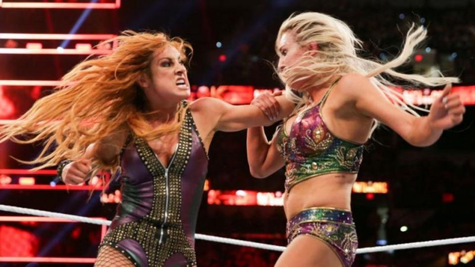
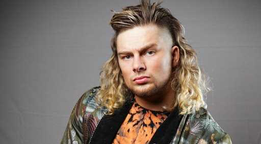

The 2019 PWI Year End Awards:
Wrestler of the YearTag Team of the Year
Match of the Year
Most Popular Wrestler of the Year
Most Hated Wrestler of the Year
Feud of the Year
Woman of the Year
Most Improved Wrestler of the Year
Inspirational Wrestler of the Year
Comeback of the Year
Rookie of the Year
Wrestler of the Year:
Adam Cole
1st Runner Up:
Chris Jericho
2nd Runner Up:
Seth Rollins

3rd Runner Up:
Kofi Kingston
Tag Team of the Year:
Kyle O'Reilly and Bobby Fish (Undisputed Era)
1st Runner Up:
Young Bucks
2nd Runner Up:
The Lucha Bros.
3rd Runner Up:
The New Day
Match of the Year:
Cody Rhodes vs Dustin Rhodes (AEW Double or Nothing)
1st Runner Up:
Johnny Gargano vs. Adam Cole (Takeover-New York)
2nd Runner Up:
Brock Lesnar vs. Seth Rollins (Summerslam)
3rd Runner Up:
Daniel Bryan vs. Kofi Kingston (Wrestlemania)
Most Popular Wrestler of the Year:
Becky Lynch
1st Runner Up:
Jon Moxley

2nd Runner Up:
Kofi Kingston
3rd Runner Up:
Johnny Gargano
Most Hated Wrestler of the Year:
Baron Corbin
1st Runner Up:
Brock Lesnar
2nd Runner Up:
Shane McMahon
3rd Runner Up:
MJF
Feud of the Year:
Johnny Gargano vs. Adam Cole
1st Runner Up:
Kenny Omega vs. Jon Moxley
2nd Runner Up:
Becky Lynch vs. Charlotte Flair
3rd Runner Up:
Becky Lynch vs. Ronda Rousey

Woman of the Year:
Becky Lynch
1st Runner Up:
Tessa Blanchard
2nd Runner Up:
Shayna Baszler
3rd Runner Up:
Brandi Rhodes
Most Improved Wrestler of the Year:
Brian Cage
1st Runner Up:
Jay White
2nd Runner Up:
Buddy Murphy
>3rd Runner Up:
Shorty G.
Inspirational Wrestler of the Year:
Roman Reigns

1st Runner Up:
Kofi Kingston
2nd Runner Up:
PCO
3rd Runner Up:
Becky Lynch
Comeback of the Year:
Roman Reigns
1st Runner Up:
Bray Wyatt (The Fiend)
2nd Runner Up:
Dustin Rhodes
3rd Runner Up:
Sasha Banks
Rookie of the Year:
Brian Pillman Jr.
1st Runner Up:
Jessamyn Duke
2nd Runner Up:
Utami Hayashishita
3rd Runner Up:
Green Ant